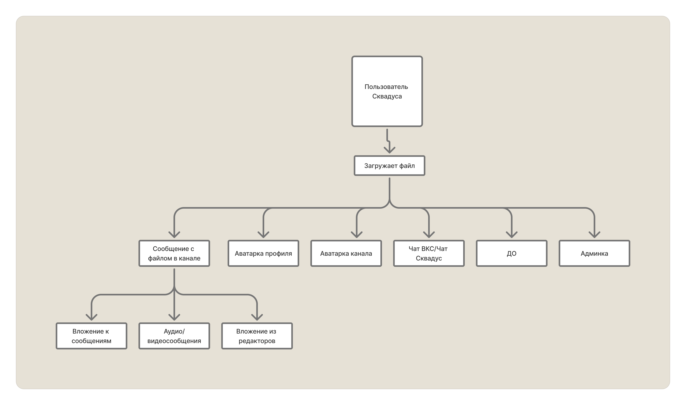
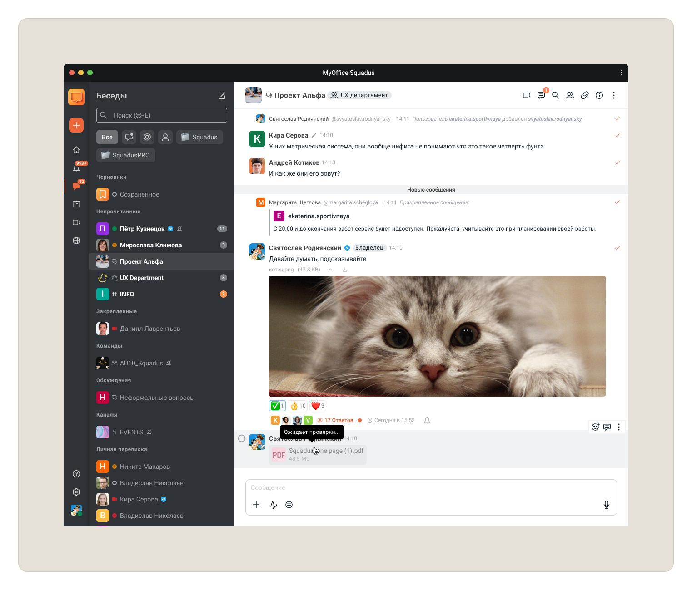
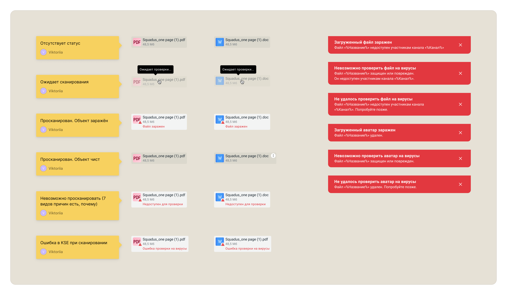
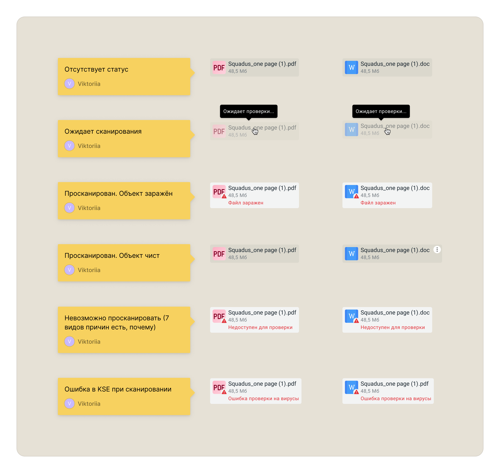
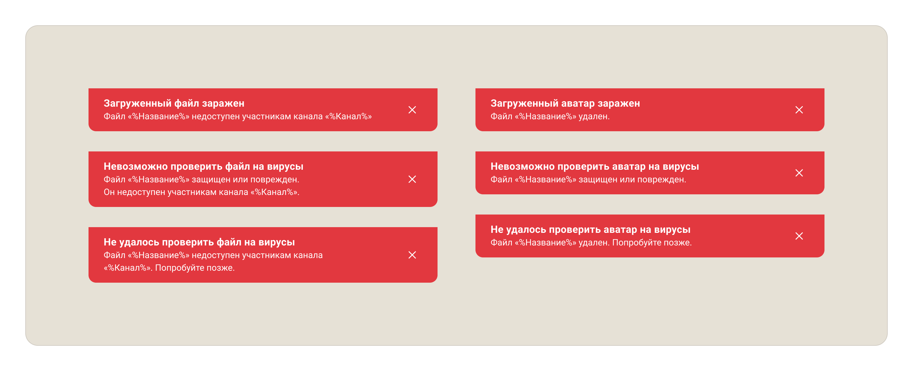

Интеграция антивирусной проверки в корпоративный мессенджер
Спроектировала систему антивирусной проверки файлов для Сквадус совместно с Kaspersky Security Engine.
Решение устранило риск распространения вредоносного ПО внутри корпоративного мессенджера и сняло один из блокеров для работы с enterprise-заказчиками.

01Контекст
Пользователи регулярно обмениваются файлами через мессенджер: документами, изображениями, аудио- и видеосообщениями.
При этом в продукте отсутствовала антивирусная проверка. Любой заражённый файл мог быть загружен в систему и распространён среди участников рабочих чатов.
Для крупных корпоративных клиентов это являлось серьёзным риском информационной безопасности и ограничивало возможности внедрения продукта.
02Задача
Спроектировать механизм антивирусной проверки файлов, который:
- защитит пользователей от вредоносного ПО;
- не нарушит привычный сценарий работы в мессенджере;
- будет понятен пользователям без дополнительных инструкций;
- сможет масштабироваться на все способы загрузки файлов.
03Основная сложность
Файл мог попасть в систему несколькими способами:
- через чат;
- через аудио- и видеосообщения;
- через редактор документов;
- через видеоконференции;
- через настройки профиля;
- через административную панель.
Важно было создать единую логику поведения независимо от точки входа.

04Что я сделала
Собрала все сценарии работы с файлами
Совместно с системным аналитиком проанализировала весь жизненный цикл файла внутри продукта.
Результатом стала карта пользовательских сценариев и единая схема движения файла от загрузки до результата проверки.
Это помогло команде увидеть все точки интеграции и избежать противоречий между платформами.

Спроектировала систему статусов
Следующим шагом стало проектирование состояний файла во время проверки.
Для каждого этапа был создан отдельный сценарий взаимодействия. Всего было проработано 6 состояний:
- загрузка;
- ожидание проверки;
- проверка;
- успешная проверка;
- обнаружение угрозы;
- ошибка проверки.
Особое внимание уделили коммуникации ошибок и уведомлений. Например, информация о заражённом файле показывается только отправителю, чтобы избежать лишней тревоги у остальных участников чата.

Продумала работу с неопределённостью
Проверка могла занимать разное время в зависимости от размера файла и нагрузки на сервер. Пользователь не должен был думать, что система зависла или сломалась.
Поэтому для каждого этапа были спроектированы понятные статусы и визуальная обратная связь.


05Решение
В продукт была интегрирована проверка файлов через Kaspersky Security Engine.
Любой загруженный файл автоматически проходит проверку перед тем, как станет доступен другим пользователям.
В случае угрозы система блокирует дальнейшие действия и сообщает пользователю причину ограничения.

06UX-решения
Единое поведение для всех точек входа
Независимо от способа загрузки пользователь сталкивается с одинаковой логикой проверки и единым набором статусов.
Понятная коммуникация статусов
Пользователь всегда понимает:
- что происходит с файлом;
- находится ли он на проверке;
- доступен ли для скачивания;
- почему операция заблокирована.

Безопасность без лишнего шума
Уведомления о проблемах получают только те пользователи, которых это касается напрямую.
Это позволило сохранить спокойный сценарий общения внутри рабочих чатов.
07Результат
- Спроектирована интеграция с Kaspersky Security Engine.
- Проработаны все основные точки загрузки файлов в системе.
- Создана единая модель поведения для Desktop и Mobile.
- Реализованы механизмы блокировки, карантина и уведомлений.
- Устранён риск распространения вредоносного ПО через мессенджер.
- Снят один из барьеров для внедрения продукта в компаниях с высокими требованиями к информационной безопасности.
Что было важно
Этот проект был не про интерфейсы, а про баланс между безопасностью и удобством.
Основная задача заключалась в том, чтобы встроить обязательный security-процесс в продукт так, чтобы он не ломал привычный сценарий работы пользователей.